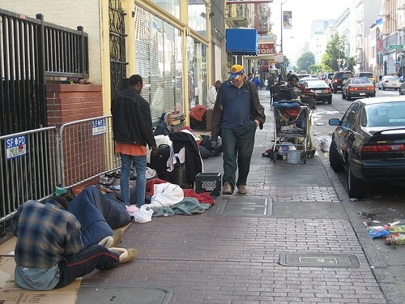

TENDERLOIN

source:WordPress
The Tenderloin is a neighborhood with residents in need of a home and medical attention. There are many people who can't afford food and the streets aren't that clean. The neighborhood is considered one of the most violent areas in San Francisco and is often looked down on, especially with the upper class reputation that San Francisco has. It is also home to many notable attractions and have been home to many significant people who have made an important impact on the world.